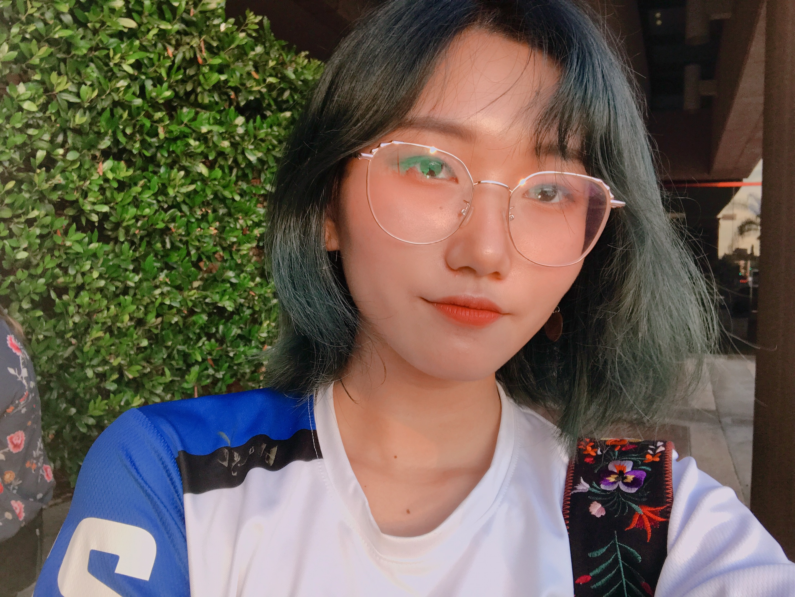
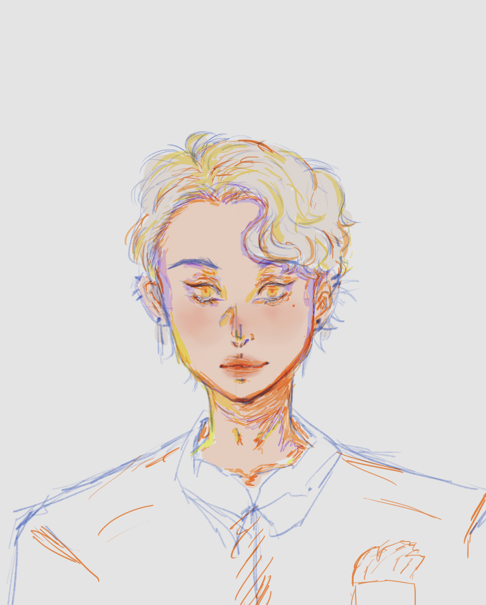
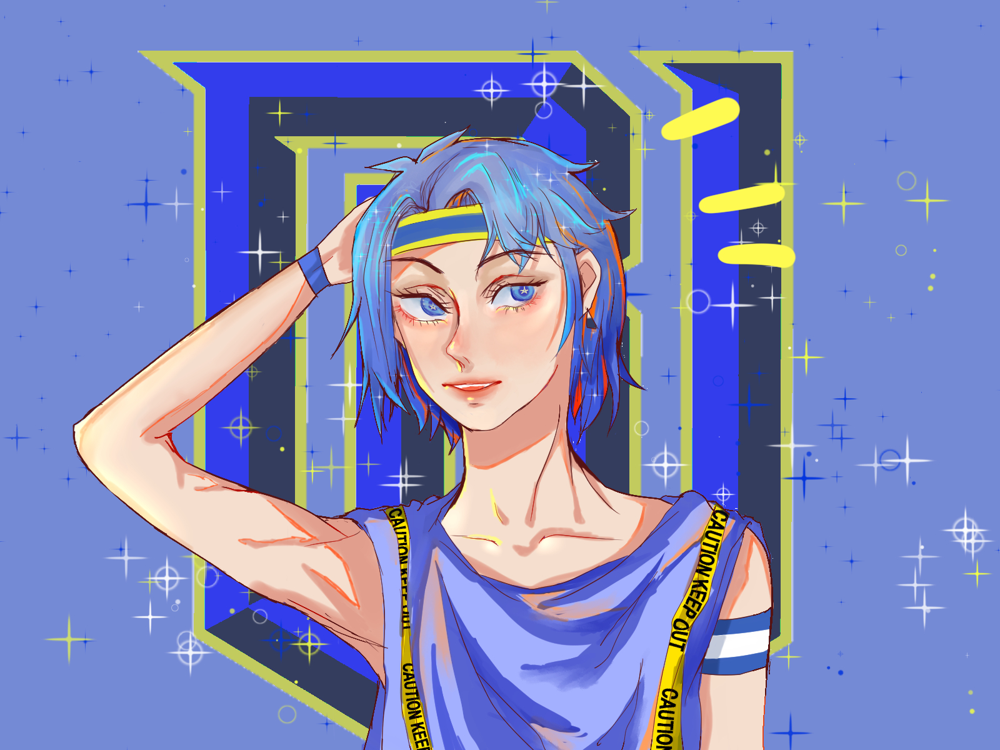
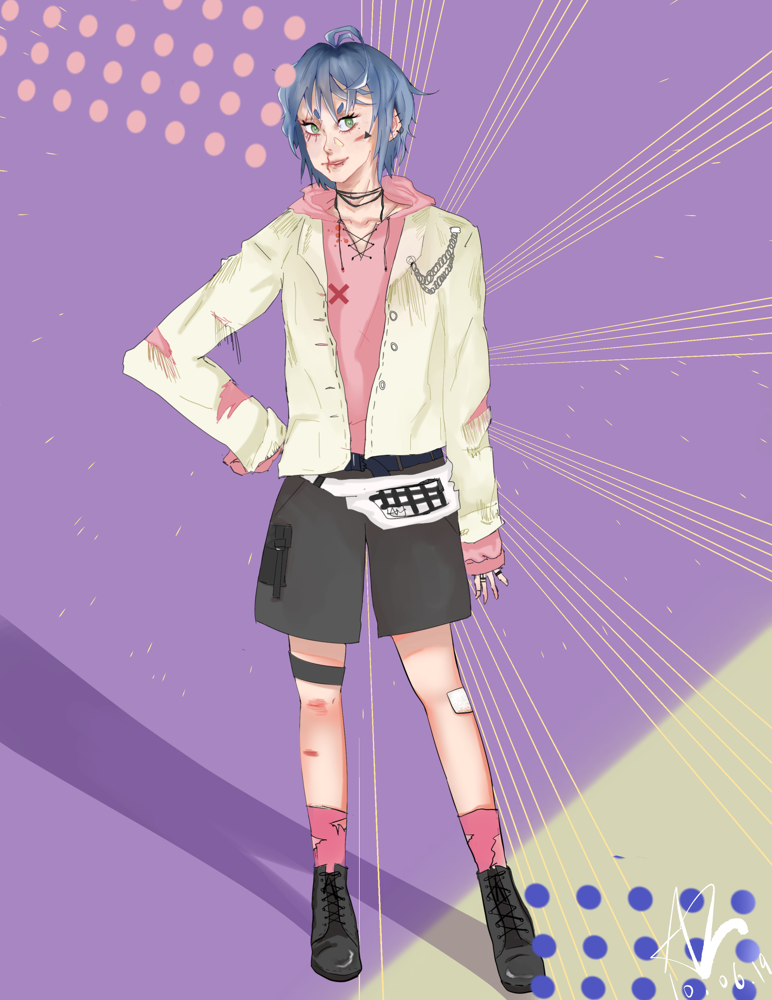
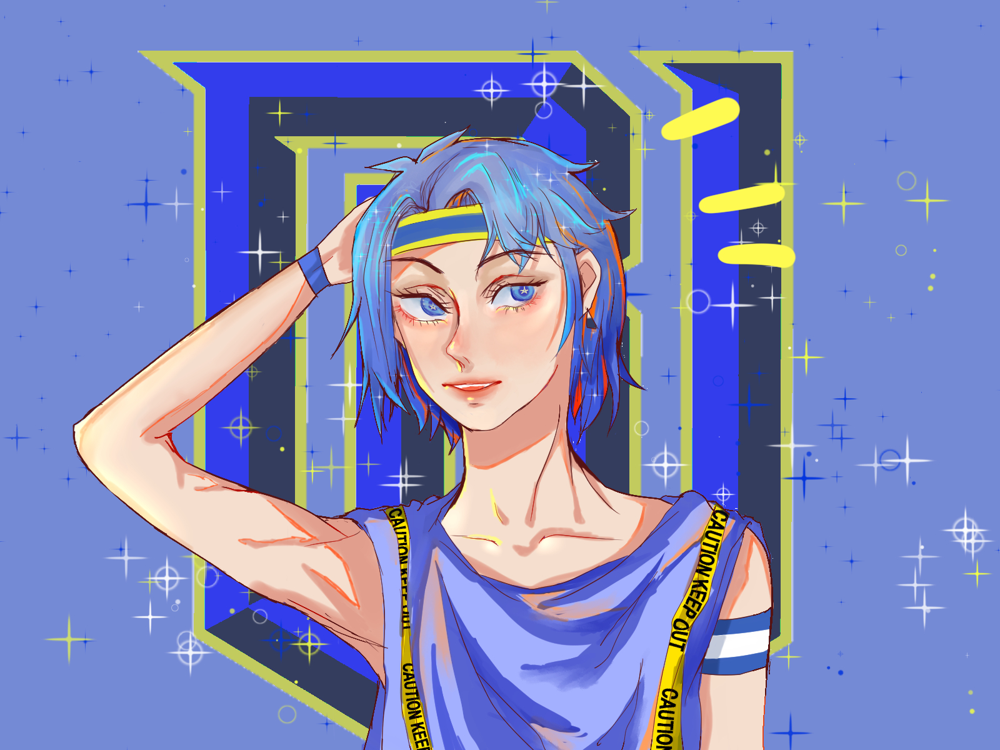
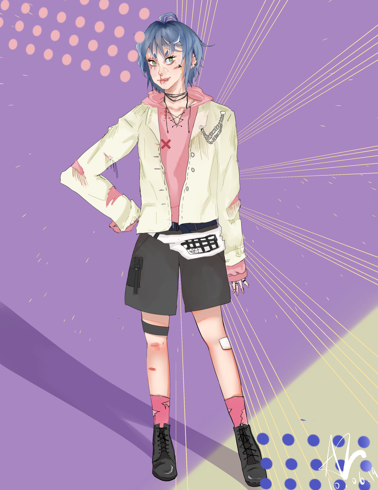

Ruzhen Zhang
email: anna030505@gmail.com
Phone Number: 7743156684
37 Pound Street, Medfield, MA
May 5th, 2003
Currently a junior at Medfield Senior High School, graduation year of 2021

Why I deserve this job
I have learned many important social skills and communication skills through my time as a cashier at my local greocey chain.
I have worked to create many positive relationships not only with my other fellow associates but also my managers.
I also learned to communicate with the public as I interacted with customers on a daily basis.
I am helpful and caring towards the customers that I encounter, I believe that I have the qualities to learn and be part of any communities.
My time as a volunteer gallery guide at HMNH futhers my communication skills as I facilitate numerous visitors of different cultures and age groups while being helpful and respectful.
Academic Information
-
GPA (unweighted): 3.95
- GPA(weighted): 4.3
-
ACT composite score: 33
-
SAT subject test biology: 700
-
Scored 56 points in AMC 12 test junior year
-
AP and honors only curriculum
Extra Curricular Activities
-
Participated in Technovation
-
Experiences in coding programs
-
Department head of the Medfield Theatre Society
-
participation in track team
-
Participation in varsity swim team
-
Member of the Medfield Science Olympiad
- Volunteer position as gallery guide at Harvard Museum of Natural History
-
Part-time job as cashier at local grocery store
-
High school mathlab tutor
-
Involvement with OWL fan ran translation page
-
Member of the Medfield Cheerleading team 2018-2019
-
Competed in TVL for Cheerleading. qualified for Regionals 2018
-
Self-taught artist
-
Participation in National Youth Leadership Forum Medicine
Other Skills
-
Fluent in both Mandarin and English
-
Studied two Romance languages: French and Latin
-
Familiar with JavaScript coding and HTML
-
Completed photography class
-
Proficcient application of graphic design
-
Profound interest in antiquity cultures and arts
Demonstrations

 


